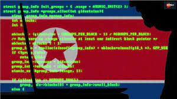
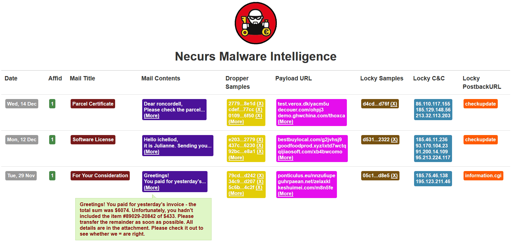
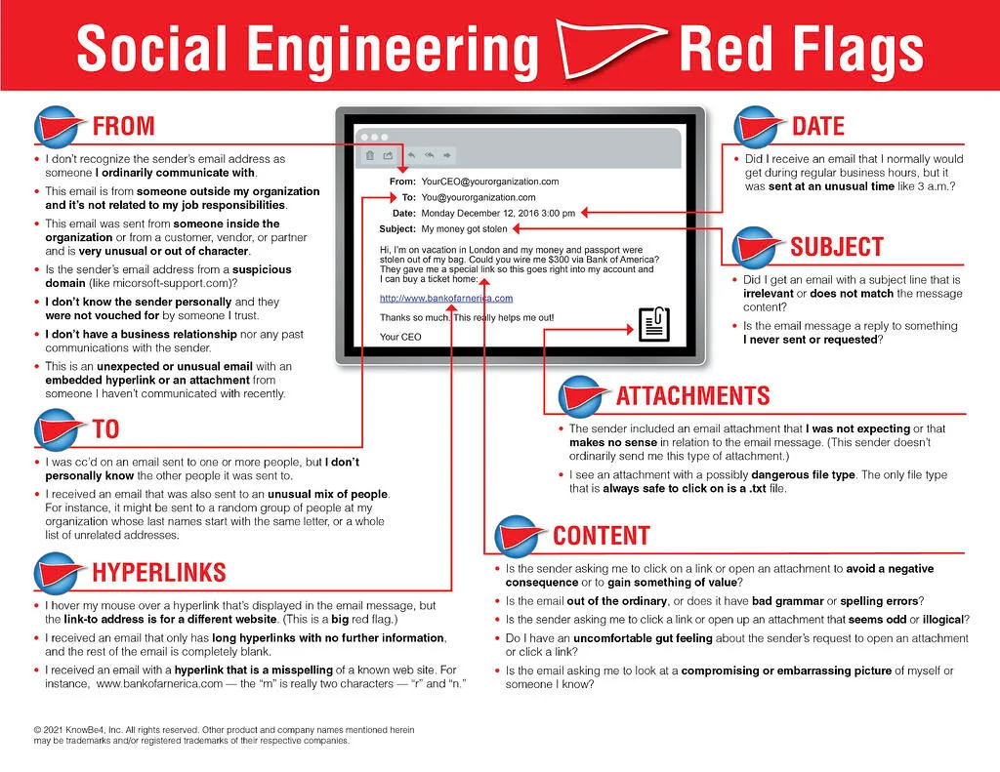

Microsoft CorpAgainstHacker Group Thallium
Microsoft Takes North Korean Hacking Group Thallium to Court
What Happened To Microsoft?
In 2019, the hacking group Thallium targeted Microsoft users such as Outlook emails by impersonating the
company with the aim of stealing sensitive information.
After researching a potential target, Thallium identified individual employees of that organization or associated individuals. It uses publicly available information and social media interaction to do so. Next, the hackers create fake email addresses to launch phishing attacks. The hackers typically impersonate legitimate services, including Hotmail, Gmail, Yahoo or even the company's webmail service.

In many other cases, the spoofed email appears to originate from a
familiar contact known by the target. The spearfishing emails include links or sophisticated redirects to fake
websites set up and controlled by Thallium. It used malware to compromise over nine millions of systems
to create Necurs, one of the world's largest botnets. The takedown of Necurs took eight years of
planning and coordinated legal and technical endeavors by Microsoft and its partners across
35 countries, according to Tom Burt, Microsoft's VP for customer security and trust
What is Necurs & How was it takendown?
The network call Necurs infected over nine million computers and one of the world's largest botnets.Necurs was responsible for multiple criminal scams including stealing personal information and sending fake pharmaceutical emails.
Cyber-criminals use botnets to remotely take over internet-connected devices and install malicious software. The software can be used to send spam, collect information about what activity the computer is used for or delete information without notifying the owner.
Necurs first appeared in 2012. It is believed to have had a network of more than nine million zombie computers.
To grow this network Necurs used a domain generation algorithm that created random domain names the group turned into websites. It used these sites to send instructions to its army of infected computers.
Microsoft and its partners were able to crack Necurs' algorithm and predict what domain names it would be using in the months ahead and block them.
What Followed after this Attack?
Microsoft sued a cyber-espionage group with North Korean links tracked as Thallium for breaking into its customers' accounts and networks via spear-phishing attacks with the end goal of stealing sensitive information, as shown by a complaint unsealed on December 27.
"To manage and direct Thallium, Defendants have established and operate a network of websites, domains, and computers on the Internet, which they use to target their victims, compromise their online accounts, infect their computing devices, compromise the security of their networks, and steal sensitive information from them," Microsoft's complaint says.
The lawsuit was filed by Microsoft on December 18 in the U.S. District Court for the Eastern District of Virginia, as first reported by Bloomberg Law's Blake Brittain.
According to Microsoft, Thallium targets both public and private industry targets and it has been observed while previously attacking "government employees, organizations and individuals that work on Nuclear Proliferation issues, think tanks, university staff members, members of organizations that attempt to maintain world peace, human rights organizations, as well as many other organizations and individuals."
The North Korean hackers are also believed to have been active since at least 2010 according to Redmond's complaint, and it is known for being behind spear-phishing attacks they operate via legitimate services such as Gmail, Yahoo, and Hotmail.
A list of 50 domains used by Thallium in their attacks and taken down by Microsoft on a court order is available in Appendix A of the complaint.
"Our court case against Thallium, filed in the U.S. District Court for the Eastern District of Virginia, resulted in a court order enabling Microsoft to take control of 50 domains that the group uses to conduct its operations," said Tom Burt, Microsoft's Corporate Vice President of Customer Security & Trust, in a blog post after this article was published.
What Is Phishing?
Phishing is a type of social engineering where an attacker sends a fraudulent (e.g., spoofed, fake, or otherwise deceptive) message designed to trick a person into revealing sensitive information to the attacker or to deploy malicious software on the victim's infrastructure like ransomware.
Phishing attacks have become increasingly sophisticated and often transparently mirror the site being targeted, allowing the attacker to observe everything while the victim is navigating the site, and transverse any additional security boundaries with the victim. As of 2020, phishing is by far the most common attack performed by cybercriminals, the FBI's Internet Crime Complaint Centre recording over twice as many incidents of phishing than any other type of computer crime.
The first recorded use of the term "phishing" was in the cracking toolkit AOHell created by Koceilah Rekouche in 1995; however, it is possible that the term was used before this in a print edition of the hacker magazine 2600. The word is a leetspeak variant of fishing, probably influenced by phreaking, and alludes to the use of increasingly sophisticated lures to "fish" for users' sensitive information
Phishing is a cybercrime in which a target or targets are contacted by email, telephone or text message by someone posing as a legitimate institution to lure individuals into providing sensitive data such as personally identifiable information, banking and credit card details, and passwords.
The information is then used to access important accounts and can result in identity theft and financial loss.
Types of Phishing Attack
There are many types of phishing attacks:
1. Email phishing
1. Spear phishing
2. Whaling and CEO fraud
3. Clone phishing
2. Voice phishing
3. SMS phishing
4. Page hijacking
5. Calendar phishing
Common Features of Phishing Emails
1. Too Good To Be True - Lucrative offers and eye-catching or attention-grabbing statements are designed to attract people's attention immediately. For instance, many claim that you have won an iPhone, a lottery, or some other lavish prize. Just don't click on any suspicious emails. Remember that if it seems to good to be true, it probably is!
2. Sense of Urgency - A favorite tactic amongst cybercriminals is to ask you to act fast because the super deals are only for a limited time. Some of them will even tell you that you have only a few minutes to respond. When you come across these kinds of emails, it's best to just ignore them. Sometimes, they will tell you that your account will be suspended unless you update your personal details immediately. Most reliable organizations give ample time before they terminate an account and they never ask patrons to update personal details over the Internet. When in doubt, visit the source directly rather than clicking a link in an email.
3. Hyperlinks - A link may not be all it appears to be. Hovering over a link shows you the actual URL where you will be directed upon clicking on it. It could be completely different or it could be a popular website with a misspelling, for instance www.bankofarnerica.com - the 'm' is actually an 'r' and an 'n', so look carefully.
4. Attachments - If you see an attachment in an email you weren't expecting or that doesn't make sense, don't open it! They often contain payloads like ransomware or other viruses. The only file type that is always safe to click on is a .txt file.
5. Unusual Sender - Whether it looks like it's from someone you don't know or someone you do know, if anything seems out of the ordinary, unexpected, out of character or just suspicious in general don't click on it!
DIY Testing
Now, that you have got a brief knowledge about Phishing. Here is a lesson on how to perform a Phishing attack.
Video Tutorial
Introduction about OCRI Training Platform
Step-by-step guidance for this tutorial.
Legal Data
Legal Aspects of such type of Phishing attacks:
1. Cybercrime laws
2. Practical and legal challenges in attribution
3. Laws and procedures for shutting down servers used for cybercrime
NICE Workforce Framework
The requirements for cybersecurity can vary widely from organization to organization. A role that can be extremely relevant to a specific business may not make sense for a smaller company or even a larger one but that works in another segment.
After going through the whole article here and completing the practical you will get some knowledge and skills that will help you to sort through some work roles which will discuss about your competency in certain aspects.
Below is a list of KS (Knowledge/Skill) provided by NICE Framework which is a part of Workforce Development by NICCS (NATIONAL INITIATIVE FOR CYBERSECURITY CAREERS AND STUDIES) which the reader here could have obtained:
| KSA ID | Knowledge |
|---|---|
| Knowledge | |
| K0001 | Knowledge of computer networking concepts and protocols, and network security methodologies. |
| K0002 | Knowledge of risk management processes (e.g., methods for assessing and mitigating risk). |
| K0003 | Knowledge of laws, regulations, policies, and ethics as they relate to cybersecurity and privacy. |
| K0004 | Knowledge of cybersecurity and privacy principles. |
| K0005 | Knowledge of cyber threats and vulnerabilities. |
| K0006 | Knowledge of specific operational impacts of cybersecurity lapses. |
| K0036 | Knowledge of human-computer interaction principles. |
| K0108 | Knowledge of concepts, terminology, and operations of a wide range of communications media (computer and telephone networks, satellite, fiber, wireless). |
| K0109 | Knowledge of physical computer components and architectures, including the functions of various components and peripherals (e.g., CPUs, Network Interface Cards, data storage). |
| K0347 | Knowledge and understanding of operational design. |
| K0349 | Knowledge of website types, administration, functions, and content management system (CMS). |
| K0350 | Knowledge of accepted organization planning systems. |
| K0352 | Knowledge of forms of intelligence support needs, topics, and focus areas. |
| K0362 | Knowledge of attack methods and techniques (DDoS, brute force, spoofing, etc.). |
| K0377 | Knowledge of classification and control markings standards, policies and procedures. |
| K0379 | Knowledge of client organizations, including information needs, objectives, structure, capabilities, etc. |
| K0392 | Knowledge of common computer/network infections (virus, Trojan, etc.) and methods of infection (ports, attachments, etc.). |
| K0395 | Knowledge of computer networking fundamentals (i.e., basic computer components of a network, types of networks, etc.). |
| K0399 | Knowledge of crisis action planning and time sensitive planning procedures. |
| K0400 | Knowledge of crisis action planning for cyber operations. |
| K0403 | Knowledge of cryptologic capabilities, limitations, and contributions to cyber operations. |
| K0408 | Knowledge of cyber actions (i.e. cyber defense, information gathering, environment preparation, cyber-attack) principles, capabilities, limitations, and effects. |
| K0411 | Knowledge of cyber laws and legal considerations and their effect on cyber planning. |
| K0414 | Knowledge of cyber operations support or enabling processes. |
| K0417 | Knowledge of data communications terminology (e.g., networking protocols, Ethernet, IP, encryption, optical devices, removable media). |
| K0422 | Knowledge of deconfliction processes and procedures. |
| K0431 | Knowledge of evolving/emerging communications technologies. |
| K0432 | Knowledge of existing, emerging, and long-range issues related to cyber operations strategy, policy, and organization. |
| K0435 | Knowledge of fundamental cyber concepts, principles, limitations, and effects. |
| K0436 | Knowledge of fundamental cyber operations concepts, terminology/lexicon (i.e., environment preparation, cyber-attack, cyber defense), principles, capabilities, limitations, and effects. |
| K0444 | Knowledge of how Internet applications work (SMTP email, web-based email, chat clients, VOIP). |
| K0445 | Knowledge of how modern digital and telephony networks impact cyber operations. |
| K0446 | Knowledge of how modern wireless communications systems impact cyber operations. |
| K0455 | Knowledge of information security concepts, facilitating technologies and methods. |
| K0464 | Knowledge of intelligence support to planning, execution, and assessment. |
| K0465 | Knowledge of internal and external partner cyber operations capabilities and tools. |
| K0471 | Knowledge of Internet network addressing (IP addresses, classless inter-domain routing, TCP/UDP port numbering). |
| K0480 | Knowledge of malware. |
| K0494 | Knowledge of objectives, situation, operational environment, and the status and disposition of internal and external partner collection capabilities available to support planning. |
| K0497 | Knowledge of operational effectiveness assessment. |
| K0499 | Knowledge of operations security. |
| K0501 | Knowledge of organization cyber operations programs, strategies, and resources. |
| K0502 | Knowledge of organization decision support tools and/or methods. |
| K0504 | Knowledge of organization issues, objectives, and operations in cyber as well as regulations and policy directives governing cyber operations. |
| K0506 | Knowledge of organization objectives, leadership priorities, and decision-making risks. |
| K0507 | Knowledge of organization or partner exploitation of digital networks. |
| K0508 | Knowledge of organization policies and planning concepts for partnering with internal and/or external organizations. |
| K0511 | Knowledge of organizational hierarchy and cyber decision-making processes. |
| K0512 | Knowledge of organizational planning concepts. |
| K0514 | Knowledge of organizational structures and associated intelligence capabilities. |
| K0516 | Knowledge of physical and logical network devices and infrastructure to include hubs, switches, routers, firewalls, etc. |
| K0518 | Knowledge of planning activity initiation. |
| K0519 | Knowledge of planning timelines adaptive, crisis action, and time-sensitive planning. |
| K0525 | Knowledge of required intelligence planning products associated with cyber operational planning. |
| K0534 | Knowledge of staff management, assignment, and allocation processes. |
| K0538 | Knowledge of target and threat organization structures, critical capabilities, and critical vulnerabilities |
| K0556 | Knowledge of telecommunications fundamentals. |
| K0560 | Knowledge of the basic structure, architecture, and design of modern communication networks. |
| K0561 | Knowledge of the basics of network security (e.g., encryption, firewalls, authentication, honey pots, perimeter protection). |
| K0565 | Knowledge of the common networking and routing protocols (e.g. TCP/IP), services (e.g., web, mail, DNS), and how they interact to provide network communications. |
| K0566 | Knowledge of the critical information requirements and how they're used in planning. |
| K0572 | Knowledge of the functions and capabilities of internal teams that emulate threat activities to benefit the organization. |
| K0576 | Knowledge of the information environment. |
| K0582 | Knowledge of the organizational planning and staffing process. |
| K0585 | Knowledge of the organizational structure as it pertains to full spectrum cyber operations, including the functions, responsibilities, and interrelationships among distinct internal elements. |
| K0586 | Knowledge of the outputs of course of action and exercise analysis. |
| K0589 | Knowledge of the process used to assess the performance and impact of operations. |
| K0590 | Knowledge of the processes to synchronize operational assessment procedures with the critical information requirement process. |
| K0593 | Knowledge of the range of cyber operations and their underlying intelligence support needs, topics, and focus areas. |
| K0594 | Knowledge of the relationships between end states, objectives, effects, lines of operation, etc. |
| K0597 | Knowledge of the role of network operations in supporting and facilitating other organization operations. |
| K0598 | Knowledge of the structure and intent of organization specific plans, guidance and authorizations. |
| K0599 | Knowledge of the structure, architecture, and design of modern digital and telephony networks. |
| K0603 | Knowledge of the ways in which targets or threats use the Internet. |
| K0610 | Knowledge of virtualization products (VMware, Virtual PC). |
| K0612 | Knowledge of what constitutes a “threat” to a network. |
| K0614 | Knowledge of wireless technologies (e.g., cellular, satellite, GSM) to include the basic structure, architecture, and design of modern wireless communications systems. |
| Skill | |
| S0218 | Skill in evaluating information for reliability, validity, and relevance. |
| S0249 | Skill in preparing and presenting briefings. |
| S0296 | Skill in utilizing feedback to improve processes, products, and services. |
| S0297 | Skill in utilizing virtual collaborative workspaces and/or tools (e.g., IWS, VTCs, chat rooms, SharePoint). |
| S0176 | Skill in administrative planning activities, to include preparation of functional and specific support plans, preparing and managing correspondence, and staffing procedures. |
| S0185 | Skill in applying analytical methods typically employed to support planning and to justify recommended strategies and courses of action. |
| S0186 | Skill in applying crisis planning procedures. |
| S0213 | Skill in documenting and communicating complex technical and programmatic information. |
| S0250 | Skill in preparing plans and related correspondence. |
| S0273 | Skill in reviewing and editing plans. |
| S0309 | Skill to anticipate key target or threat activities which are likely to prompt a leadership decision. |
| S0312 | Skill to apply the process used to assess the performance and impact of cyber operations. |
| S0322 | Skill to craft indicators of operational progress/success. |
| S0333 | Skill to graphically depict decision support materials containing intelligence and partner capability estimates. |
| S0209 | Skill in developing and executing comprehensive cyber operations assessment programs for assessing and validating operational performance characteristics. |
| S0326 | Skill to distinguish between notional and actual resources and their applicability to the plan under development. |
| S0349 | Skill to synchronize operational assessment procedures with the critical information requirement process. |
| S0360 | Skill to analyze and assess internal and external partner cyber operations capabilities and tools. |
Have a Question? Ask Us
We will get back to you